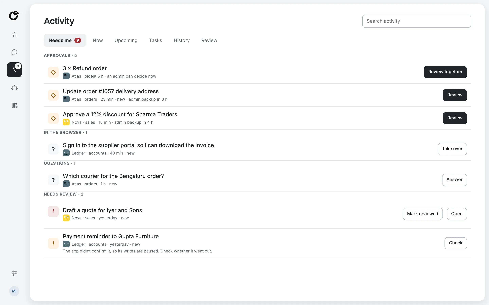
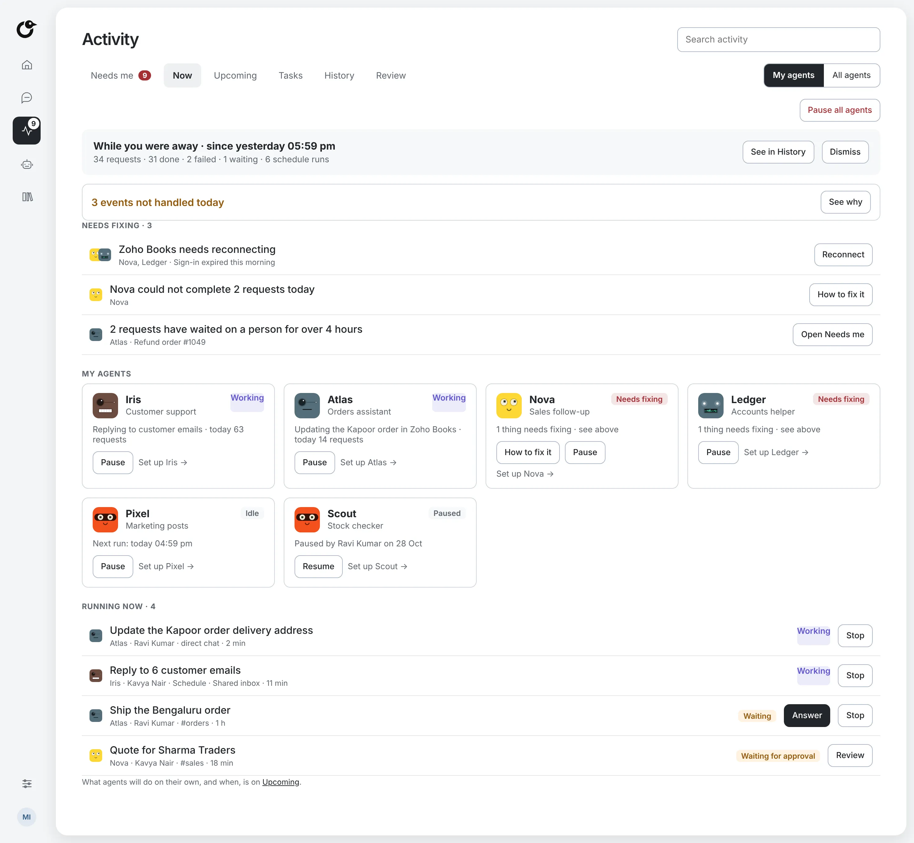
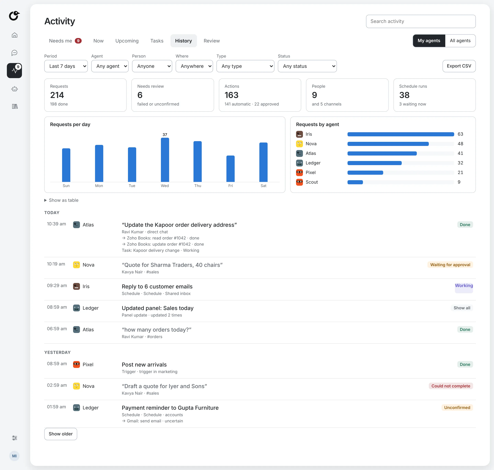
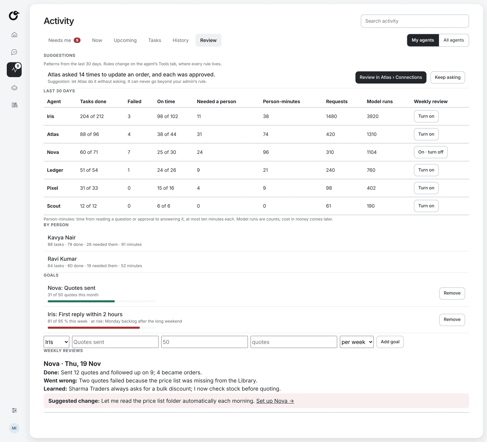
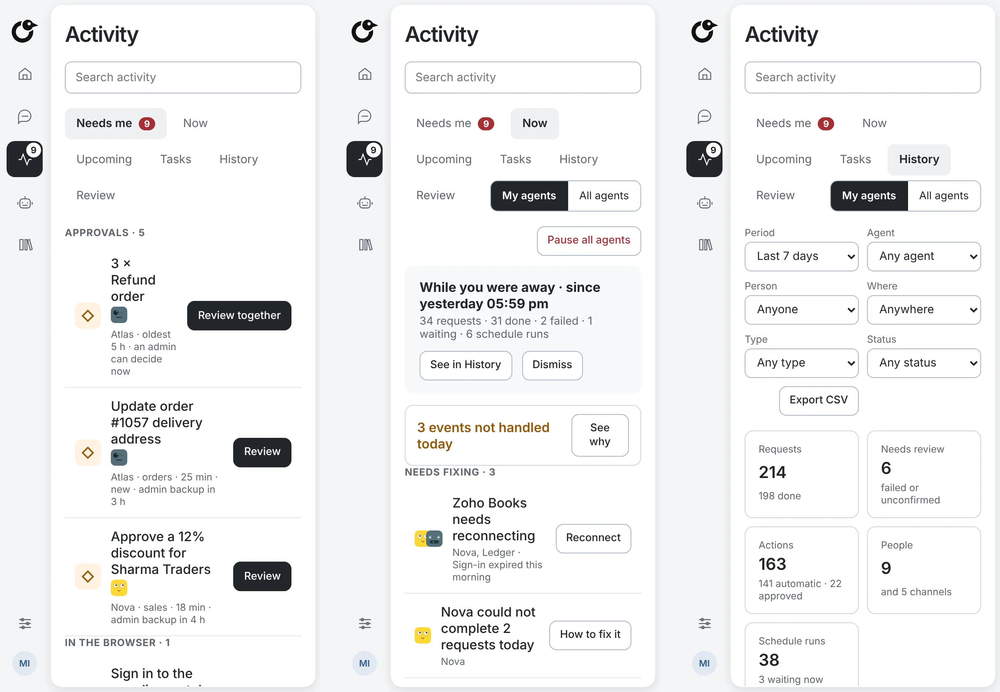

Cuckoo · Activity page · design review, 21 Nov 2026
The Activity page: how it works today, and three better designs
Activity is where a person supervises their AI agents: decide what agents ask for, see what they are doing, and check what they did. The wording and the safety rules on the page are strong. The layout is not. The page was approved with three views and now has six, and the structure never caught up.
Based on the code in web/src/react/activity/, the spec in runtime/activity.md, the approved mockups in designs/activity/, and the real page rendered in a browser with made-up sample data. No user testing was done, and the approval and question dialogs were not reviewed because they need a live server.
What the Activity page is for
Home shows dashboards, Chat is where people and agents talk, Agents is where agents are set up. Activity is the control room. It only reads existing records, so opening it never starts any work. It does six different jobs, one per tab, plus a details drawer that opens from any row.
Tab
The question it answers
What is on it
How often you need it
Needs me
What is waiting for my decision?
Approvals, questions, browser hand-overs, failed or unconfirmed work
Many times a day
Now
What are my agents doing? Is anything broken?
“While you were away”, Needs fixing, a card per agent, requests running now with Stop
A few times a day
Upcoming
What will run by itself, and when?
Schedules, triggers, follow-ups and due tasks, with Pause
Daily to weekly
Tasks
What have agents promised and not finished?
Open tasks grouped by state: needs fixing, late, waiting, working
Daily
History
What exactly happened?
Six filters, five totals, two charts, a timeline by day, CSV export
When something looks wrong
Review
Can I trust this agent with more?
30-day numbers per agent, rule suggestions, goals, weekly reviews
Weekly to monthly
The design approved on 30 Oct had three tabs (Needs me, Now, History). Upcoming, Tasks, Review, the My agents / All agents switch, Needs fixing and Pause all agents were added later, each one in the simplest free spot.
The current design, screen by screen
These are screenshots of the page as it is built today, at 1440 × 900 (the long ones show the whole scroll). The company, people and numbers are made up. Each red number matches a note on the right.

12345
Six tabs with equal weight. A list you clear many times a day sits beside a report you read once a month. Nothing tells a new person where to look first.
The red count is only this list. A broken connection that stops two agents is on another tab (Now → Needs fixing) and is not counted.
Every item opens a dialog. To clear nine items you open and close nine dialogs, and the list is dimmed while you read. The approved mockup kept the list and the details side by side.
Urgency is hidden in grey 12px text. “An admin can decide now” and “admin backup in 3 h” look the same as the channel name.
Group headings touch the row above. A CSS rule removes their top margin, so groups run together. The same happens on Tasks, Upcoming and Review.

123456
The most dangerous action is the first button. “Pause all agents” stops every agent for the whole workspace, and it has a permanent red-outlined spot at the top.
A side note shouts. “3 events not handled today” is the largest coloured text on the page, larger than the actual problems below it.
A second “needs a person” list. Needs fixing is separate from Needs me, and its third row only sends you back to Needs me.
The Working label is broken. An old global .working rule adds 14px of padding under it, so the purple box hangs below the word. It shows on every Working label in Activity.
Cards point elsewhere. “1 thing needs fixing · see above” makes you scroll up and find it yourself. Cards and Running now also repeat the same work.
“Now” starts below the fold. With only six agents, Running now begins 956px down a 900px window. The tab is named after the part you cannot see.

123456
One search box, three behaviours. It filters the loaded list on some tabs, asks the server on History, and does nothing on Review.
A filter is the darkest control. My agents / All agents is filled like a primary button, and it disappears on Needs me.
Six dropdowns, each with a label. They take a full row even when nothing is filtered.
Totals and charts come first, and the tiles do nothing. “Needs review 6” is the one number you want to click, and it is not a link.
The log starts 620px down. People open History to find one request. On a 900px window they see three rows of it.
Repeated words. “Schedule · Schedule · Shared inbox” and “Trigger · trigger in marketing”: the row prints the type twice.

12345
“Review” means five things. A tab, a button on approvals, “Review together”, “Mark reviewed” and the “Needs review” group. The spec calls this tab Progress.
A wall of numbers. Eight columns per agent and nothing says which values are good or bad. Nova fails 7 of 71 tasks and looks the same as Scout with none.
Headings touch the text above, the same margin bug as on Needs me.
The goal form is unstyled. Native inputs in a different size, with no visible labels.
Type sizes are out of order. The weekly review text is larger than every heading on the page.

1234
Tabs wrap into three rows. With the search box above them, the first item starts about a third of the way down the screen.
Titles are squeezed to 90px. The button keeps its width, so “3 × Refund order” breaks into three lines beside it.
Controls before content. On Now, the scope switch, Pause all agents and two banners fill the first screen before any agent appears.
Filters fill the whole screen. On History the first request is two screens down.
Is it good UI/UX?
Half of it is. What the page says and what it lets you do are well designed. How it is arranged and how it looks are not at the same level yet.
Area
Rating
Why
Wording
Strong
Plain sentences everywhere: “Could not complete”, “How to fix it”, “The app didn’t confirm it, so its writes are paused.” No error codes.
Safety of actions
Strong
Reading never approves. Retry is refused when an action may already have happened. Pause all asks first and says what will stop.
States and access basics
Good
Loading, empty and error states on every tab. Status is always text plus colour. Tabs work with arrow keys. Charts have a table view.
Structure
Weak
Six equal tabs. Things that need a person are split over three tabs. Rows are laid out four different ways.
Visual hierarchy
Weak
Filters and warnings are louder than the content. The main content of Now and History starts below the fold.
Speed of clearing work
Weak
One dialog per item, no keyboard path through the list, urgency in grey text.
Phone
Poor
About a third of the screen is controls. Titles wrap to three words a line.
Polish
Needs work
Five visible bugs, listed under “Fix first” at the end.
The three problems that cost the most
Three places to look for “what needs me”. Needs me, Now → Needs fixing, and Tasks → Needs fixing / Late. They link to each other, and only the first one is counted in the red badge.
A dialog for every item. Deciding is the main job of the page and it is the slowest thing to do on it.
Summary before substance. Banners, tiles, charts and filters sit on top of the lists people came for.
Keep these in any redesign
The plain wording and the fixed sentence patterns.
One explicit action per row, named for what it does.
The request details: every step, how it was allowed, and how to fix it.
Folding repeated panel updates and repeated approvals into one row.
Live updates, with the 10-second fallback.
Three designs
Each design is a different answer to one question: what should a person see first? A puts the decisions first, B puts the agents first, C puts time first. All three keep every feature the page has today and use Cuckoo’s own colours, type and shell. They are live mockups with the same made-up company, and they follow light and dark mode.
A
One queue
Everything that waits on a person is one list with one count. Read on the right, decide at the bottom, and the next item opens by itself. Like a mail inbox for agent work.
Try it: click any row on the left, then press Approve, Reject or the other buttons.
11
Activity
Needs you 11WorkPlannedHistory
InsightsMy agents ▾Search
What it fixes
One list and one count for everything that waits on a person, in three groups: Decide, Answer, Fix.
No dialogs. The list stays visible, and after each decision the next item opens.
Urgency is a label you can see (“Admin can decide now”), and the list is sorted by it.
Four tabs in order of use. Review and the charts move to Insights, on the quiet side of the header.
History opens on the log. Totals become one line above it.
What it costs
The two panes need about 1,000px. Below that it becomes list, then details, like Chat on a phone.
The red count gets bigger because Fix items join it. The design system says the rail count is the Needs me count, so that definition is the owner’s decision.
Fix items only show for people who can fix the agent, so the list differs per person. That is already true of Needs fixing today.
What has to be built
One merged list from three reads that exist: attention, Now’s fixing groups, and tasks that are late or need fixing. One server list is better, so order and paging stay stable.
The approval, question and outcome dialogs’ content moved into the pane.
Keyboard: J and K to move, A to approve, R to reject.
No new write routes.
Design A on a phone
ActivityMy agents ▾
Needs you 11WorkPlannedHist…
Decide · 5
◇3 × Refund orderAdmin can decide nowAtlas5 h
◇Approve a 12% discount for Sharma TradersNova · #sales18 min
◇Update order #1057 delivery addressAtlas · #orders25 min
Answer · 2
?Which courier for the Bengaluru order?Atlas · #orders1 h
?Sign in to the supplier portalLedger · take over its browser40 min
Fix · 4
!Zoho Books needs reconnectingStops Nova and Ledger3 h
‹ Needs youNext ›
Waiting for your approvalApprove a 12% discount for Sharma TradersNNova · Kavya Nair in #sales
What Nova wants to doZoho Books · Create quote
Customer
Sharma Traders
Items
40 × Teak dining chair
Discount
12%
Total
₹4,18,000
Discounts above 10% need a manager. If nobody decides by 2:40 pm, an admin can.
ApproveReject
The tab row scrolls sideways in one line, the way the For you filters already do in Chat. Search and the scope switch fold into the header.
Rows have no buttons, so the title gets the full width. Tapping a row opens the item full screen with the decision fixed at the bottom, in reach of a thumb.
B
Team board
One row per agent, like a staff list: what each is doing, whether it needs you, and when it runs next. Pick an agent and everything about it is on the right.
Try it: click an agent row, or a filter above the list.
11
Activity
TeamNeeds you 11HistoryInsights
My agents ▾Search⋯
AgentRight nowNeeds youNext runToday
Sorted by what needs you first. While you were away (since yesterday 5:54 pm): 34 requests, 31 done, 2 failed.
What it fixes
“Is everyone OK?” is answered on one screen. Ten agents fit in the space that six cards and the Running now list take today.
Flat rows instead of cards, which is what the design system asks for in agent lists.
For one agent, four tabs become one panel: needs you, doing now, coming up, earlier today, and its 30-day line.
A count per agent replaces “1 thing needs fixing · see above”.
Pause all agents moves into the ⋯ menu, with the same confirmation.
What it costs
Questions across agents (“everything planned this week”) need the other tabs or an “All agents” row.
Someone who manages no agents sees a short list. For them the page should open on Needs you.
Past about 30 agents the list needs the filters above and the urgency sort to stay useful. Both are in the mockup.
What has to be built
The list comes from the Now read that exists today (agents, running, fixing).
The right panel reads Upcoming and History filtered to one agent, and drops late answers when you pick another agent.
“Needs you” per agent should be a server count. Counting on the client is wrong once the list has more than one page.
C
Day timeline
Now, Upcoming and History become one column in time order with a line at this moment: what happened above it, what is running on it, what is planned below it.
Try it: the filters above the timeline hide and show rows.
11
Activity
TimelineNeeds you 11TasksInsights
My agents ▾Search⋯
‹Today, Sat 21 Nov›Any agent ▾
Earlier today
42 requests finished without problems · 12 panel updates · 5 schedule runsShow all
LPayment reminder to Gupta Furniture Ledger · schedule · Gmail didn’t confirm the email went outUnconfirmedCheck
N“Draft a quote for Iyer and Sons” Nova · Kavya Nair in #sales · price list missingCould not completeHow to fix it
Now · 10:54 am
AShip the Bengaluru order Atlas · Ravi Kumar in #orders · asks which courier to useWaiting for your answerAnswer
NQuote for Sharma Traders Nova · Kavya Nair in #sales · 12% discount needs a managerWaiting for your approvalReview
IReply to 6 customer emails Iris · schedule · 4 of 6 replied WorkingStop
AUpdate the Kapoor order delivery address Atlas · Ravi Kumar · direct chat · updating order #1042WorkingStop
Later today
IReply to the shared inbox Iris · every hour · set up by Ravi KumarPause
LBank reconciliation Ledger · every day · set up by youPause
NCheck if Sharma Traders replied Nova · follow-up on a taskCancel follow-up
PPost new arrivals Pixel · every day · set up by Meera IyerPause
Tomorrow
2 planned: Morning stock check (Scout, 12:54 am) · Reply to the shared inbox (Iris, hourly)Show
Needs you · 11
◇3 × Refund order Atlas · admin can decide now
!Zoho Books needs reconnecting Stops Nova and Ledger
◇Update order #1057 delivery address Atlas · 25 min
Open all 11 →
Agents
NNovaNeeds fixing
LLedgerNeeds fixing
AAtlasWorking
IIrisWorking
PPixelReady · 4:54 pm
SScoutPaused
Today by hour
50 requests so far · 2 went wrong (red)
What it fixes
Three tabs become one page that reads top to bottom: before, now, next.
Work that finished without problems folds into one line. What went wrong always stays visible.
Planned work shows next to what is running, so you can see a clash before it happens.
One row layout everywhere: time, state, agent, what, status, action.
What it costs
A busy workspace is a risk. The load test in the spec has 81,000 requests in 90 days, about 900 a day. The folding rules must be good or the page is noise.
Looking across weeks (charts, filters by person or channel, export) still needs a search view under Insights.
It is the furthest from the approved design, so it has the most to build and re-test.
What has to be built
Three reads that exist (Now, Upcoming, History for one day) merged by time.
A day summary from the server for the folded counts. Paging 25 rows at a time cannot produce them.
Tasks stays its own tab. A task has no single time to place it on.
Side by side
Today
A · One queue
B · Team board
C · Day timeline
First thing you see
A list with buttons
The most urgent item, opened
Every agent’s state
What is running now
Top-level tabs
6
4, plus Insights
4
4
“What needs me” lives in
3 tabs
1 list
1 list, plus a count per agent
1 list, plus a side panel
Deciding an item
Open a dialog, decide, close
Decide in place, next one opens
Same as today, from the agent’s panel
Same as today, from the row
Best for
People who approve and answer a lot
People who own several agents
Small teams who want the whole day in one view
Weak spot
Needs a wide window
Cross-agent questions
Very busy workspaces
Distance from the approved design
Closest
Medium
Furthest
Size of the work
Medium
Medium
Large
Recommendation
Build A, and use B’s agent list as A’s Work tab.
A removes the two biggest costs on the page: three places to look, and a dialog for every decision. It is also the closest to what was approved on 30 Oct, because that mockup already had the list and the details side by side. B’s agent rows are the best replacement for today’s cards, so they fit as the Work tab inside A. C has one idea worth keeping, the “now” line, which can go on the Planned tab later. As a whole page, C is the riskiest for a busy workspace.
Fix first, whichever design you choose
The Working label: web/src/style.css:25 has a global .working rule that leaks into .activity-status.working.
Group headings: activity.css:20 removes the top margin from every heading that is first in its section, which is all of them.
Repeated words in History rows: the row prints the type and then a place that starts with the type again (history.tsx Row and model.ts place).
Phone rows: let the title take the full width and put the button under it. Let the tab row scroll sideways.
Review: style the goal form with the shared fields, and bring the weekly review text down to body size.
Then, in this order
Needs you as a split view, still with today’s items. This alone removes the dialogs.
Add the Fix items to the same list, once the owner decides what the red count means.
The Work tab with agent rows and their side panel.
History with the log first. Move totals, charts and Review into Insights.
The phone layout for all four tabs.
Two decisions belong to the product owner before building: whether Fix items count in the rail’s red number, and the new tab names (Needs you, Work, Planned, History, Insights).